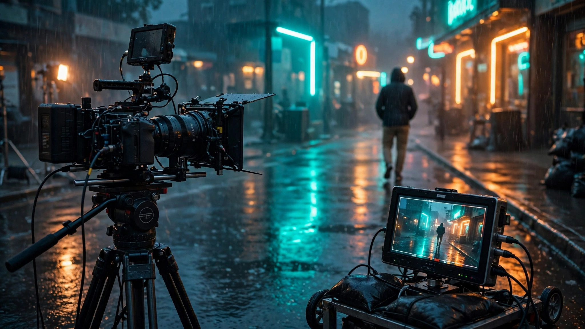

Veo 3.1 Prompts: 12 Copy-Paste Video Prompts for Flow (Lite, December 2026)

Most Veo 3.1 prompt lists have the same problem: they were written for Fast and Quality, and they never mention the deadline. Google's own Flow help pages say Veo 3.1 Fast, Veo 3.1 Quality and Omni Flash 1.1 retire from Flow on 5 December 2026 — twelve days from now — and Veo Extend was already retired on 5 November 2026. After that date Flow keeps two video models: Omni Flash 1.2 and Veo 3.1 Lite. Every prompt on this page is written for Veo 3.1 Lite, so what you build now still works in December.
What Veo 3.1 is: Google released it in October 2025 as the update to Veo 3, with richer native audio, greater narrative control and stronger prompt adherence, especially for image-to-video. It generates video with synchronised sound — dialogue, sound effects and ambient noise — from the same text prompt. In Flow, Veo 3.1 Lite makes 4, 6 or 8-second clips at 720p for a flat 10 credits per clip (5 on Ultra). Lite does no editing and no extending in Flow, so each prompt below is one self-contained shot. Veo outputs carry Google's SynthID watermark.
The Formula Behind Every Prompt Below
Google's Cloud prompting guide for Veo 3.1 gives a five-part formula, in this order: [Cinematography] + [Subject] + [Action] + [Context] + [Style & Ambiance]. Cinematography comes first — shot size, angle and the one camera move. Audio is a separate direction: name dialogue, sound effects and ambient noise only when they matter. Three rules run through all 12 prompts: one clear camera move per shot, one clear subject action per shot, and a length that fits the clip — Lite tops out at 8 seconds, so each prompt holds one or two beats, never a whole scene.
How to Use These Prompts in Flow
- Open a project in Google Flow on desktop, click the model name in the prompt box and choose Video.
- Pick Veo 3.1 Lite, set the aspect ratio (16:9 for YouTube, 9:16 for TikTok and Shorts) and choose a 4, 6 or 8-second clip — 8 seconds costs the same 10 credits as 4, so use the full length when the shot allows it.
- Paste the prompt as written, replacing everything in [brackets]. For image-to-video prompts, upload the reference photo first.
- Generate, then fix one thing at a time in a follow-up prompt instead of rewriting the whole shot.
Text-to-Video: Cinematic Shots
1. The street at night
8-second 16:9 shot. Wide shot from a low angle, handheld with a slight sway. A woman in a long charcoal coat crosses a wet street with a paper umbrella, neon signs in red and teal reflecting in puddles. She steps off the curb, pauses halfway as a tram passes behind her, then keeps walking out of frame right. Palette: black, teal, red, warm sodium orange. Audio: rain, a distant tram bell. No text on screen.
2. The documentary interview
8-second 16:9 shot. Medium close-up, eye level, locked-off camera, slight film grain and warm VHS colour. A 1990s documentary-style interview: an old fisherman in a faded yellow raincoat sits on an upturned crate inside a cluttered boat shed, nets hanging behind him, grey morning light through a dusty window. He looks just off camera, smiles, and says: "The sea never cared who I was. That's why I liked it." Audio: his voice, faint gulls outside.
3. Drone over the valley
8-second 16:9 shot. Drone shot gliding slowly forward over a misty pine valley at dawn, a river winding below. Wide framing, soft golden light breaking through the mist. Audio: wind, distant birds, water. No people, no dialogue, no text on screen.
4. The hand-painted robot
8-second 16:9 shot. Style: hand-painted 2D animation with soft brush textures and warm tungsten light. A small round robot with one blinking eye tidies a cluttered inventor's workshop, stacking books and switching off a desk lamp. Slow push-in, eye level. Audio: soft whirring, a book thud, a lamp click. No dialogue, no text on screen.
Image-to-Video: Product Shots
Upload your product photo first. These prompts keep the product still and move the camera instead — the move that holds a product's shape and label steady.
5. Product reveal, slow push-in
8-second vertical 9:16 product ad shot using the uploaded photo as the reference for [product name]. The product is visible from the first frame, centred on [a light wooden table] in soft natural light. Use a slow camera push-in while the product stays still. Preserve its shape, colour, proportions and packaging. Leave room above the product for a headline. No added text, no props covering the label, no voiceover.
6. Macro texture close-up
8-second vertical 9:16 macro shot using the uploaded photo as the reference for [product name]. Slow glide across the most important detail: [stitching, lid, bristles or material texture]. Shallow depth of field, soft side light, clean [surface] background. The product must not change form or colour. No text, no added logos, no voiceover.
7. Product in use, one action
8-second vertical 9:16 shot using the uploaded photo as the reference for [product name]. Show one simple action that proves the main benefit: [for example, a hand slips the closed travel mug into a car cup holder]. Keep the product's shape, colour and label unchanged throughout. Steady camera at product height, soft daylight, no cuts, no text, no voiceover. Audio: the single sound of the action, then quiet room tone.
8. Locked camera, moving light
8-second vertical 9:16 shot starting from the uploaded photo. Keep the camera completely locked and the [bottle of pet stain remover] perfectly still. Let a warm light sweep slowly across the background from left to right, with a gentle shimmer on the surface below. Preserve the bottle's shape, colour and label text exactly. No camera movement, no hands, no cuts, no added text.
Dialogue and Sound
9. Rooftop, one line
8-second 16:9 shot. Two friends on a rooftop at dusk, city lights below. Handheld close-up drifting slowly between their faces. One laughs and says: "We actually did it." Audio: their laughter, the line of dialogue, wind, distant traffic. No text on screen.
10. Market sounds
8-second 16:9 shot. A night-market vendor in Taipei flips noodles in a wok, steam rising from food carts, then looks up as a scooter passes. Slow push-in, eye level, shallow depth of field, neon-lit night, warm highlights. Audio: sizzling wok, scooter engine passing left to right, distant chatter. No dialogue, no text on screen.
Vertical Social Clips
11. Morning routine hook
6-second vertical 9:16 candid lifestyle shot. A tired young adult in a small apartment kitchen opens the fridge in the first half-second. Over-the-shoulder handheld shot reveals half a lemon, leftover rice and a bell pepper. They pause, unsure what to cook. Warm kitchen light contrasts with the cool fridge light. One continuous shot. Audio: natural room tone and fridge hum. No dialogue, no captions, no logos, no visible phone screen.
12. Runner at dawn
6-second vertical 9:16 tracking shot at dawn on an empty neighbourhood street. A runner in plain grey clothing, seen from behind, starts jogging in the first half-second as the camera follows at waist height. Cool blue light. Audio: breath and rhythmic footsteps on pavement. Keep the runner's face out of frame. One continuous shot. No music, no captions, no logos, no visible phone screen.
Quick Answers
Which Veo model should I use in Flow now?
Veo 3.1 Lite. Google's Flow help pages list it as the dependable low-cost baseline for 720p creation, at 10 credits a clip (5 on Ultra), and it is one of the two models that stay after 5 December 2026. The other is Omni Flash 1.2, which adds longer clips and editing.
Can I still use Veo 3.1 Fast or Quality?
Until 5 December 2026, yes, at their usual credit rates — Fast was 20 credits a clip, Quality 100 for an 8-second clip. After that date they are retired in Flow, so don't build a new project on them.
What about Sora 2 prompts?
Be careful with them: several prompt guides note OpenAI closed the Sora app on 26 April 2026 and the Sora 2 API on 24 September 2026. The prompts themselves are plain descriptions of a shot, so the good ones still work on Veo 3.1, Kling and similar models — but any guide that tells you to open the Sora app is out of date.
Do Veo videos have sound?
Yes — native audio is Veo 3.1's headline feature. Name the dialogue, sound effects and ambient noise in the prompt; if you don't name any sound, say so ("no music, no dialogue") or the model may invent some.